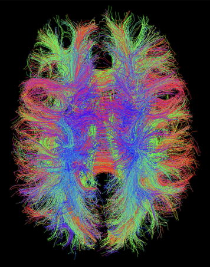

Tractography
This page outlines TractoR’s facilities for tractography, otherwise known as tract tracing, virtual dissection or white matter segmentation. The package currently offers seed-based or mask-based probabilistic tractography, based on a tensor or ball-and-sticks diffusion model. Streamline pathways, visitation maps and connectivity profiles can be obtained.
The track script
Tractography in TractoR is run using the track script, which requires some fully preprocessed diffusion MR data, stored in a session directory. A simple example is
tractor track /data/subject1 TractName:global
which will generate 100 streamlines from each voxel within the brain mask of the session directory rooted at /data/subject1, and write out an image whose voxels indicate the total number of streamlines passing through in each case. The TractName option determines the name of all output files.
Note that TractoR’s tractography is probabilistic, in the sense that an element of randomness is involved, which means that repeated tracing from a given seed point will not in general produce equivalent results. There are three reasons for this:
- Seeding jitter. By default, each streamline is initiated from a random position within the voxel. This avoids the rather artificial grid structure that results from always seeding at voxel centre points. It can be disabled by setting the
JitterSeedsoption tofalse. - Modelling uncertainty. The BEDPOSTX ball-and-sticks model fitted by the
bedpostscript, which is the preferred diffusion model in TractoR, estimates a posterior distribution over fibre directions in each voxel. A sample from this distribution is drawn in each voxel visited during the tracking process. This aspect is not relevant to the diffusion tensor model, which can be selected withPreferredModel:dti. - Probabilistic interpolation. Like some other software, TractoR uses a probabilistic analogue of trilinear interpolation to identify suitable fibre directions at subvoxel locations. Under this scheme, neighbouring voxels are chosen as the source with a probability that is proportional to their proximity. This is built into the algorithm, and cannot be changed.
Seeding options
Instead of using the whole brain mask to seed, there are a number of options to narrow down the scope of seeding. The most obvious is to specify a location explicitly, as in
tractor track /data/subject1 41,38,23 Streamlines:1000
which seeds 1000 streamlines from voxel location (41,38,23). Notice that these indices are 1-based, and correspond to the locations given by the internal viewer (tractor view).
A second option is to specify an image file as the second argument, which will be used as a mask.
Thirdly, if a parcellation is available, labelled regions in the parcellation may be specified by name or type (following the names in the auxiliary .lut file). For example,
tractor track /data/subject1 white_matter
will seed in all white matter voxels, if such a region is defined.
Further refinement of the seeding region is possible using options such as AnisotropyThreshold, which ignores seeds with a fractional anisotropy below a specified threshold, and BoundaryManipulation, which applies mathematical morphology to the seed region. For example,
tractor track /data/subject1 postcentral_gyrus_left BoundaryManipulation:outer
will extract the left postcentral gyrus from the parcellation, apply a morphological dilation and subtract the original mask, resulting in a set of seed voxels just outside this grey matter region. These will typically correspond to neighbouring white matter and cerebrospinal fluid. The latter can be removed by setting an AnisotropyThreshold.
Target regions
As well as the seeding regions, a set of target areas can be specified, and streamlines may optionally be required to pass through them, or else truncated when they do so. This is often a prelude to creating a diffusion-based connectivity graph. Like seed masks, target regions can be standalone image files or named regions from a parcellation. For example,
tractor track /data/subject1 white_matter TargetRegions:cerebal_cortex TerminateAtTargets:true MinTargetHits:2
seeds from every white matter voxel and terminates in cortical grey matter regions. The option MinTargetHits:2 stipulates that both ends of the streamline must reach a target, otherwise it is rejected and not included in the result.
If the actual streamlines are required, in addition to a visitation map or instead of it, the option RequirePaths:true can be added. In this case the streamlines are written to a .trk file, which can be opened in TrackVis for visualisation as shown below.

If target regions are used then an auxiliary .trkl file will also be created. This is a TractoR-specific extension that stores information about which streamlines reached which targets, for rapid lookup in other scripts such as graph-build.
Basic information about the contents of a .trk file can be obtained using the trkinfo script, and further mapping, of the seed or end-points is available through the trkmap script.
Finally, the track scripts offers connectivity profiling, which is often performed voxelwise to identify the distribution of end-points of streamlines emanating from that location. The key option here is RequireProfiles.
tractor track /data/subject1 thalamus_left Strategy:voxelwise TargetRegions:cerebal_cortex TerminateAtTargets:true RequireProfiles:true
Here, the Strategy:voxelwise option forces tractography to be run separately for each seed point. In each case, the number of “hits” to each target are counted, and the result is written into a standard CSV file, which can be opened in R or Microsoft Excel.
Neighbourhood tractography
An alternative to conventional tractography is probabilistic neighbourhood tractography, which is focussed on automatic segmentation of predefined major tracts, in a way that is consistent across subjects. There are separate scripts for that, which the tutorial explores.